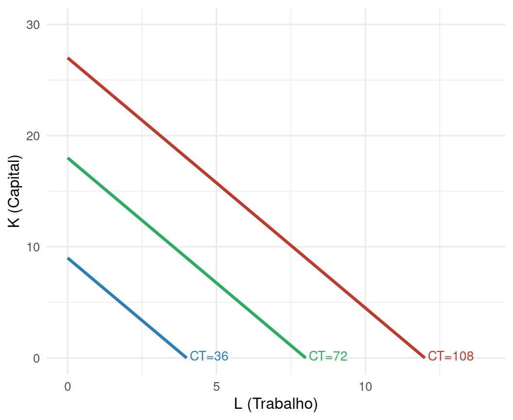
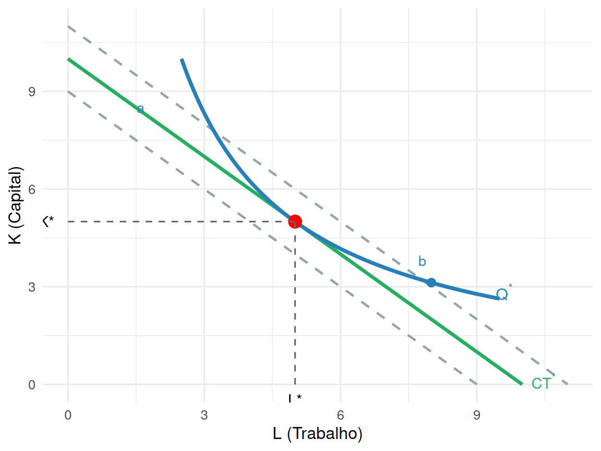
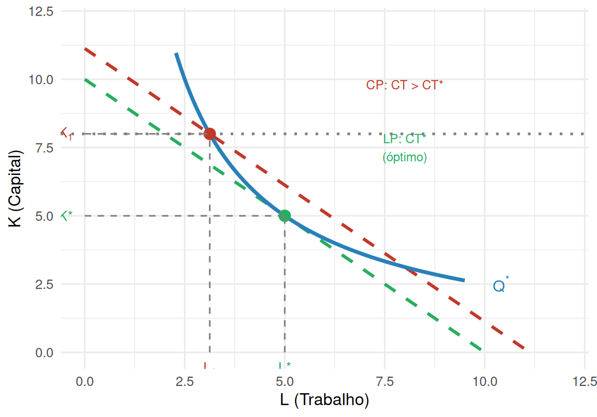
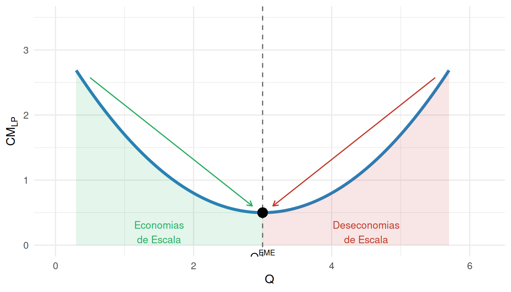

Otimização de Longo Prazo e Isoquanta
Microeconomia — Licenciatura em Contabilidade e Administração
2026-04-02
Curto Prazo vs. Longo Prazo
No curto prazo, pelo menos um factor produtivo é fixo (tipicamente o capital \(K\)), dando origem a custos fixos.
No longo prazo, todos os factores são variáveis — a empresa pode escolher livremente a combinação de capital \(K\) e trabalho \(L\):
- Não existem custos fixos
- A empresa tem mais graus de liberdade
- Pode sempre alcançar custos médios iguais ou menores do que no curto prazo
Important
Problema do produtor a longo prazo: encontrar a combinação \((K, L)\) que minimiza o custo de produzir uma dada quantidade \(Q^*\).
O Problema de Optimização de Longo Prazo
\[\min_{K,\, L} \; rK + wL \qquad \text{sujeito a} \quad F(K,L) = Q^*\]
onde \(r\) é o custo unitário do capital e \(w\) o custo unitário do trabalho.
| Símbolo | Significado |
|---|---|
| \(r\) | Custo de aluguer/uso do capital (taxa de juro, amortização) |
| \(w\) | Salário (custo do trabalho) |
| \(rK + wL\) | Custo total a minimizar |
| \(F(K,L) = Q^*\) | Restrição: produzir exactamente \(Q^*\) |
A restrição \(F(K,L) = Q^*\) define todas as combinações \((K,L)\) que produzem \(Q^*\) — a isoquanta.
Isoquanta: definição
Isoquanta
Curva que representa todas as combinações de capital \(K\) e trabalho \(L\) que permitem obter a mesma quantidade produzida \(Q^*\).
\[\{(K, L) : F(K, L) = Q^*\}\]
É uma curva de nível da função de produção ao nível \(Q^*\).
Para funções da família \(F(K,L) = A K^a L^b\), a isoquanta é uma hipérbole no espaço \((L, K)\).
Isoquantas mais afastadas da origem correspondem a níveis de produção mais elevados.
Isoquantas: geometria
Ao longo de cada isoquanta, \(K\) e \(L\) são substituíveis — reduzir um factor obriga a aumentar o outro para manter \(Q^*\).
Taxa Marginal de Substituição Técnica (TMST)
A inclinação da isoquanta mede a taxa a que a empresa troca \(L\) por \(K\) mantendo a produção constante:
\[TMST_{L,K} = -\frac{dK}{dL}\bigg|_{Q=Q^*} = \frac{PMg_L}{PMg_K}\]
- A TMST é decrescente ao longo da isoquanta (lei dos rendimentos marginais decrescentes)
- Quando se tem muito \(K\) e pouco \(L\), o trabalho é muito produtivo → troca-se muito \(K\) por uma unidade de \(L\)
- Conforme se substitui \(K\) por \(L\), a TMST diminui
Note
A TMST é análoga ao \(TMS\) do consumidor — aqui avalia a substituição de factores em vez de bens de consumo.
Isocusto: definição
Isocusto
Recta formada por todas as combinações de \(K\) e \(L\) com o mesmo custo total \(\overline{CT}\):
\[\overline{CT} = rK + wL \quad \Longleftrightarrow \quad K = \frac{\overline{CT}}{r} - \frac{w}{r} L\]
Interceptos:
- Eixo \(K\) (\(L=0\)): \(K = \dfrac{\overline{CT}}{r}\)
- Eixo \(L\) (\(K=0\)): \(L = \dfrac{\overline{CT}}{w}\)
Inclinação: \(-\dfrac{w}{r}\) (razão dos preços dos factores)
Isocustos mais afastados da origem correspondem a custos totais mais elevados.
A inclinação é constante — os preços dos factores são dados para a empresa.
Isocusto: geometria

Isocustos paralelos: mesma inclinação \(-w/r\), diferentes níveis de custo.
A Condição de Óptimo
O mínimo de custo para produzir \(Q^*\) ocorre no ponto onde a isoquanta é tangente ao isocusto:
\[TMST_{L,K} = \frac{w}{r} \qquad \Longleftrightarrow \qquad \frac{PMg_L}{PMg_K} = \frac{w}{r}\]
Interpretação: no óptimo, o “valor” marginal de cada euro gasto em \(L\) iguala o de cada euro gasto em \(K\):
\[\frac{PMg_L}{w} = \frac{PMg_K}{r}\]
Important
Se \(\dfrac{PMg_L}{w} > \dfrac{PMg_K}{r}\): o trabalho é relativamente mais produtivo por euro → convém substituir \(K\) por \(L\).
Só no óptimo é que a empresa não tem incentivo a realocar factores.
Exemplo Resolvido
\(F(K,L) = K^{0{,}5} L^{0{,}5}\), \(Q^* = 100\), \(r = w = 5\).
Passo 1 — Isoquanta: \(100 = K^{0.5}L^{0.5}\) \(\Rightarrow\) \(KL = 10\,000\) \(\Rightarrow\) \(K = \dfrac{10\,000}{L}\)
Passo 2 — Substituir na função custo: \[CT(L) = 5 \cdot \frac{10\,000}{L} + 5L = \frac{50\,000}{L} + 5L\]
Passo 3 — CPO: \[\frac{dCT}{dL} = -\frac{50\,000}{L^2} + 5 = 0 \;\Rightarrow\; L^2 = 10\,000 \;\Rightarrow\; L^* = 100\]
Resultado: \(L^* = 100\), \(K^* = 100\), \(CT^* = 500 + 500 = 1\,000\).
Verificação da condição de óptimo: \(TMST = K/L = 1 = w/r = 5/5 = 1\) ✓
Isoquanta + Isocusto: o óptimo graficamente

Os pontos \(a\) e \(b\) também produzem \(Q^*\), mas com custo maior — estão sobre isocustos superiores.
Custos de Longo Prazo são Menores
No curto prazo, \(K\) está fixo em \(K_1 \neq K^*\): a empresa não pode ajustar o capital.

No LP, a empresa minimiza custos em \((L^*, K^*)\). No CP com \(K = K_1\) fixo, atinge a mesma isoquanta mas com custo superior.
Custo Médio de Longo Prazo
Cada ponto da curva \(CM_{LP}\) é o mínimo do \(CTM\) de curto prazo para o nível de capital óptimo correspondente a cada \(Q\):
A curva \(CM_{LP}\) é o envelope inferior de todas as curvas de custo médio de curto prazo.
Economias e Deseconomias de Escala

| Zona | Condição | Significado |
|---|---|---|
| Economias de escala | \(CM_{LP}\) decrescente | Crescer reduz o custo médio |
| Escala Mínima Eficiente (EME) | Mínimo de \(CM_{LP}\) | Dimensão óptima da empresa |
| Deseconomias de escala | \(CM_{LP}\) crescente | Crescer aumenta o custo médio |
Custos Económicos vs. Contabilísticos
Note
Os custos usados na análise económica são custos de oportunidade — incluem não apenas despesas de caixa, mas também o valor das alternativas a que se renuncia.
Consequências importantes:
- O lucro económico é sempre \(\leq\) o lucro contabilístico
- Uma empresa com lucro contabilístico nulo pode ter lucro económico negativo (se o capital poderia render mais noutro uso)
- No equilíbrio de longo prazo concorrencial, o lucro económico é zero — mas a empresa tem um lucro contabilístico normal (cobre o custo de oportunidade do capital)
Important
\(\Pi_{econ} = RT - CT_{econ}\) onde \(CT_{econ}\) inclui o custo de oportunidade de todos os factores, incluindo o capital próprio do empresário.
Exercícios
Exercício 1 (Escolha Múltipla)
Uma empresa tem \(F(K,L) = 2K^{0.5}L^{0.5}\), \(r = w = 2\), e pretende produzir \(Q^* = 20\). Qual a combinação óptima \((K^*, L^*)\) e o custo mínimo?
(A) \(K^*=5,\ L^*=5,\ CT^*=20\)
(B) \(K^*=10,\ L^*=10,\ CT^*=40\)
(C) \(K^*=20,\ L^*=20,\ CT^*=80\)
(D) \(K^*=10,\ L^*=5,\ CT^*=30\)
. . .
Solução
Resposta: (B)
Isoquanta: \(2\sqrt{KL}=20 \Rightarrow \sqrt{KL}=10 \Rightarrow KL=100 \Rightarrow K=100/L\).
\(CT(L) = 200/L + 2L\); CPO: \(-200/L^2+2=0 \Rightarrow L^*=10\), \(K^*=10\).
\(CT^*=2(10)+2(10)=40\). Verificação: \(2\sqrt{100}=20\) ✓
Exercícios
Exercício 2 (Escolha Múltipla)
Qual das seguintes afirmações sobre o longo prazo é correcta?
(A) No longo prazo os custos fixos são constantes.
(B) O \(CM_{LP}\) é sempre superior ao \(CTM\) de curto prazo.
(C) O \(CM_{LP}\) é o envelope inferior dos \(CTM\) de curto prazo.
(D) No longo prazo a empresa não tem grau de liberdade para escolher \(K\).
. . .
Solução
Resposta: (C)
No LP não há custos fixos → (A) falsa. O \(CM_{LP} \leq CTM_{CP}\) em qualquer ponto → (B) falsa. No LP a empresa escolhe \(K\) livremente → (D) falsa. A curva \(CM_{LP}\) tangencia cada \(CTM_{CP}\) pelo baixo — é o seu envelope inferior → (C) correcta.
Exercício 3 (Desenvolvimento)
Uma empresa tem \(F(K,L) = KL\), com \(r = 4\) e \(w = 9\). Pretende produzir \(Q^* = 36\).
a) Escreva a equação da isoquanta e determine a combinação óptima \((K^*, L^*)\).
b) Calcule o custo mínimo \(CT^*\) e escreva a equação do isocusto óptimo.
c) Verifique a condição de óptimo \(TMST = w/r\).
d) Se no curto prazo o capital está fixo em \(K_1 = 12 \neq K^*\), qual seria \(L_1\) e \(CT_1\)? Compare com \(CT^*\).
Solução
a) Isoquanta: \(KL = 36 \Rightarrow K = 36/L\).
\(CT(L) = 4(36/L) + 9L = 144/L + 9L\).
CPO: \(-144/L^2 + 9 = 0 \Rightarrow L^* = 4\), \(K^* = 9\).
b) \(CT^* = 4(9) + 9(4) = 36 + 36 = 72\). Isocusto: \(72 = 4K + 9L\), i.e. \(K = 18 - \tfrac{9}{4}L\).
c) \(TMST = K/L = 9/4\) e \(w/r = 9/4\) ✓
d) \(K_1=12\): isoquanta \(\Rightarrow L_1 = 36/12 = 3\). \(CT_1 = 4(12)+9(3) = 48+27 = 75 > 72 = CT^*\). O CP tem custo superior, como esperado.
Síntese
- No longo prazo todos os factores são variáveis — o problema é minimizar \(rK+wL\) sujeito a \(F(K,L)=Q^*\).
- A isoquanta mostra todas as combinações \((K,L)\) que produzem \(Q^*\) — é análoga à curva de indiferença do consumidor.
- O isocusto representa combinações de igual custo; a sua inclinação é \(-w/r\).
- O óptimo ocorre na tangência isoquanta-isocusto: \(TMST = w/r\), ou equivalentemente \(PMg_L/w = PMg_K/r\).
- Os custos de LP são sempre \(\leq\) custos de CP — no LP a empresa tem mais flexibilidade.
- A curva \(CM_{LP}\) é o envelope inferior das curvas \(CTM\) de CP.
- Há economias de escala quando \(CM_{LP}\) é decrescente; deseconomias quando é crescente.
- O mínimo de \(CM_{LP}\) é a Escala Mínima Eficiente (EME).